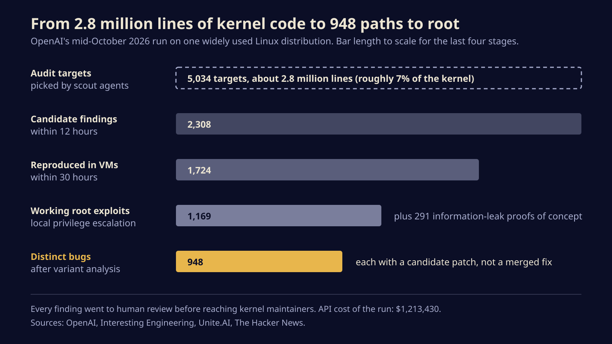
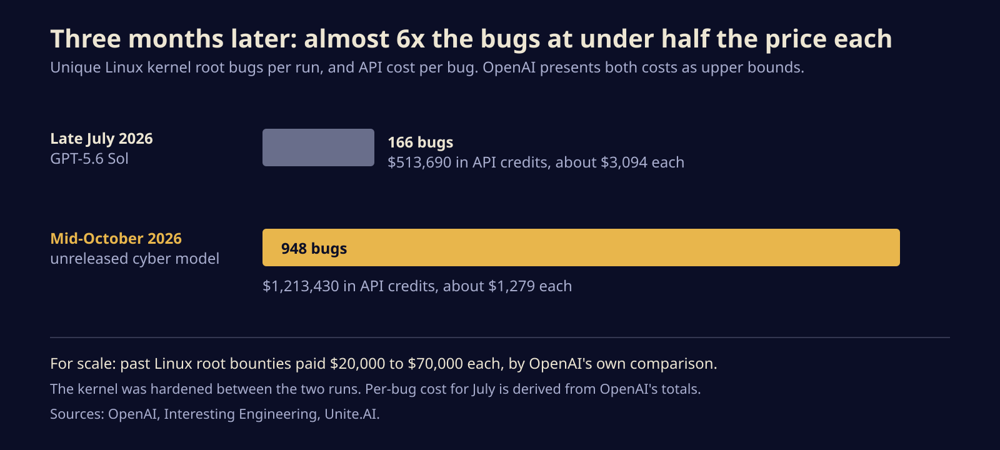

OpenAI's agents found 948 ways to root Linux in one run, at $1,279 a bug
An autonomous OpenAI pipeline turned a slice of the Linux kernel into nearly a thousand working privilege-escalation bugs for $1.2 million. Here is how the funnel worked, what it means for anyone running Linux, and what to do while the patches land.
OpenAI says a team of its AI agents found 948 distinct bugs in the Linux kernel that each let an ordinary user become root, and wrote a working exploit and a candidate patch for every one. The run cost $1,213,430 in API credits, about $1,279 per bug, which is a small fraction of what a single Linux root bug has earned at hacking contests.
That price is the news. Finding a kernel privilege escalation used to take a skilled researcher weeks. If a machine can now produce them by the hundred for the cost of a used laptop each, then every Linux box with more than one user on it, and every sandbox that runs code you did not write, needs a fresh look.
How the funnel worked
OpenAI published the results on 4 November under the title "A thousand fewer paths to root," as part of its Patch the Planet effort with outside partners. The run itself happened in mid-October against the kernel of one widely used Linux distribution, which OpenAI did not name, using a cyber-focused model it has not released or named either.
The pipeline is a production line with a human at the end. Scout agents picked 5,034 places in the code worth auditing, about 2.8 million lines or roughly 7 percent of the kernel. Analyst agents turned those into 2,308 candidate findings within 12 hours. Each candidate was then reproduced inside an isolated virtual machine, and 1,724 survived that test within 30 hours. Exploit agents built 1,169 working root exploits and 291 proofs of concept for bugs that leak kernel memory. Variant analysis, which groups exploits that hit the same underlying flaw, brought the total down to 948 distinct bugs.

Coverage does not line up perfectly. The Hacker News describes the 948 as working exploits, while Interesting Engineering and Unite.AI report 1,169 exploits that collapse into 948 distinct bugs. The second reading fits the funnel, so that is the one we use. Unite.AI also reports that the model's analysis was wrong in 3.1 percent of cases, which is why the reproduction step exists at all.
The agents did more than rediscover old tricks. OpenAI says they used at least 10 exploitation techniques that outside kernel experts considered new, including ways to arrange objects in kernel memory and methods that gain root by changing data alone, without hijacking code. OpenAI has withheld the technical details.
The curve is the real story
This is not OpenAI's first pass at the kernel. In June it reported 24 root exploits from its GPT-5.5-Cyber model. In late July, GPT-5.6 Sol found 166 unique root bugs for $513,690, roughly $3,094 each. The October run found almost six times as many at well under half the price per bug, even though the kernel had three more months of hardening in between. OpenAI calls both cost figures upper bounds.

OpenAI also priced the haul against past bounties from contests such as Pwn2Own and TyphoonPWN, which paid between $20,000 and $70,000 per Linux root bug. On that basis the 948 bugs would be worth $18.9 million to $66.3 million. That is an illustration, not income, but it makes the point: the economics of finding these bugs have shifted, and they will not shift back.
Fixes are coming, slowly
A candidate patch is not a shipped fix. OpenAI says human researchers reviewed every finding before it went to maintainers, that it has already sent hundreds of reports and patches for the critical bugs, and that it is pacing the rest on the kernel community's advice. OpenAI has not said how many of its patches maintainers have accepted.
That pacing matters. Kernel maintainers are a small group, many of them volunteers, and a stack of nearly a thousand AI-written reports is a real workload even when the reports are good. OpenAI itself notes that its patches need expert-guided iteration to be correct and robust. Expect these fixes to reach stable kernels over months, not days.
What to do on your own machines
None of this needs panic, because every one of these bugs requires an attacker to already be running code on the machine. It does change what "already running code" means.
- Treat a local account as root on any unpatched machine. OpenAI argues a low-privileged shell on an unpatched system is effectively root for a well-funded attacker. Plan around that on shared servers, lab boxes and anything with SSH users you do not fully trust.
- Install kernel updates and actually reboot. A new kernel does nothing until it is running. Compare
uname -rwith the newest kernel your package manager installed, or use your distribution's live-patching service if you cannot reboot often. - Do not rely on containers alone for untrusted code. Containers share the host kernel, so a kernel root bug can become a container escape. For CI runners, AI coding agents and anything else that executes code from strangers, use stronger isolation such as gVisor, which intercepts system calls, or Firecracker microVMs, which give each job its own kernel.
- Shrink who can run code at all. Fewer local users, fewer services running as real accounts and fewer build jobs on production hosts all cut the number of doors a kernel bug can open.
A root bug used to be a researcher's month. Now it is a line item.
The uncomfortable part is that OpenAI is only the lab that published. The same capability, pointed at the same kernel by someone with no interest in disclosure, would produce the same pile of exploits and none of the patches. For a while the defenders who can afford these runs have the lead, and the kernel gets safer for everyone. How long that lasts depends on how fast the fixes ship compared with how fast the models spread.
Sources
Written with AI for Bade's Mod Shop. Facts are checked against the sources above on the day of publishing; if one is wrong, open an issue.